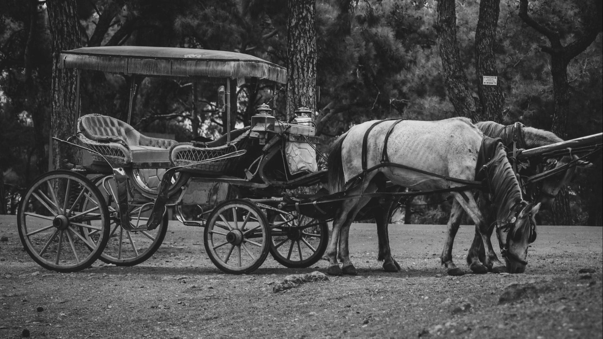

Transportation
From carriage to a sonic airplane,
How does the transportation developed over the centuries?
Omar Shaikh Al Zoor
A second year Computing and Information Technology student at RIT University in Dubai

Last updated on October 28, 2022 4:43pm
The inventions of the Wheels
Prior to the advent of the wheel, people used to transport and ship their goods from one location to another by carrying them or utilizing animals such as horses and donkeys. People employed simple innovations such as rollers and sleds to assist them carry large objects. Those fundamental technologies were used to construct the magnificent pyramids of Giza, one of the seven wonders of the ancient world. The invention of wheels during the Bronze age resulted in a major quantum leap in human history. The first wheeled vehicle was a small two-wheel chariots that could only transport one person at a time, and it was drawn by a horse. The size of the chariot grew over time to accommodate more passengers and items. Centuries later, the railways came into exist in Greece about 600 BCE. These rails were used to transport slave-powered boats. The utilization of wheels developed over centuries, and many other innovations had been constructed until the first horseless carriage/Automobile was invented in 1769 (Wei, 2012, p. 200-201).
From Wagon to automobile

In 1769, Nicolas Joseph Cugnot built a three wheeled automobile, which was powered by the steam. That concept had several flaws, ranging from the car's efficiency to its engine's massive size and dirtiness. Years later, when the brothers Nicephore and Claude Niepce devised an internal combustion engine in 1807, they replaced the notion of employing a steam driven engine with a gasoline powered engine. The combustion/gasoline engine, which is fueled by Gasoline, had gone through several stages of improvement and development before Karl Friedrich Benz built the first working vehicle in 1885. Benz's automobile could attain a top speed of 15 kilometers per hour. Gottlieb Daimler produced his first vehicle four years later, in 1889, for $850, which was extraordinarily costly at the time. Nine years later, Henry Ford created the Model T vehicle for the mainstream market, which cost only $250. Since then, the vehicle industry has grown considerably, and it is now the second largest capital investment for American households, after the house. Furthermore, there are more than two-thirds of Americans have a driver's license. On the other hand, there is growing concern about how these internal combustion engines are affecting the environment and contributing to global warming (Wei, 2012, p. 202-205).
Flying alongside with birds: Airplane
Since ancient times, humans have always desired the ability to fly like birds and eagles. At that time, human's ability to fly alongside birds was only seen in Greek Myths and Chinese poetry, and no one expected these delusory fancies to come true one day (Wei, 2012, p. 202-205; Falk, 2013, p. 155). Years before the first airplane was built, the dream of rising to the air was achieved when hot air balloon was made by the brothers Joseph-Michel and Jacques-Etienne Montgolfier in the capital of France, Paris, during the late 18th century (Wei, 2012, p. 216; Falk, 2013, p. 156). A century later, the Wright brothers succeeded in developing the first flying machine. Surprisingly, their researches and testing machines are still used to create modern4 airplanes. However, because the Wright brothers could not locate a suitable engine for their innovations, they built their own engine that allowed the plane's rider to fly for no more than a few minutes. That is why the airplane innovation went through various stages before reaching its current state. This innovation led to enormous number of discoveries such as the discovery of Venezuela's largest waterfall and ancient geoglyphs such as Peru's Nazca Lines (Wei, 2012, p. 223; Falk, 2013, p. 156).